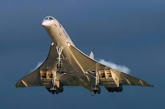
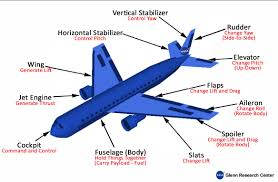
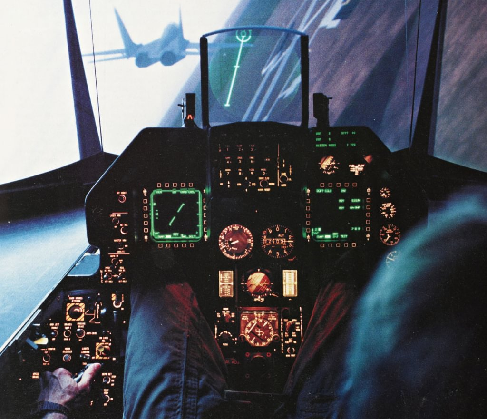
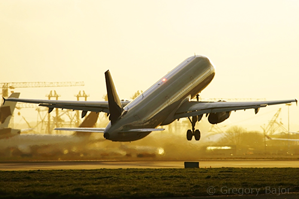
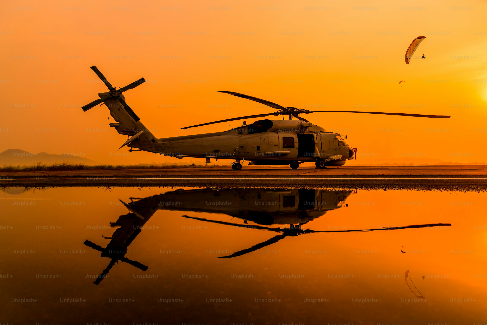
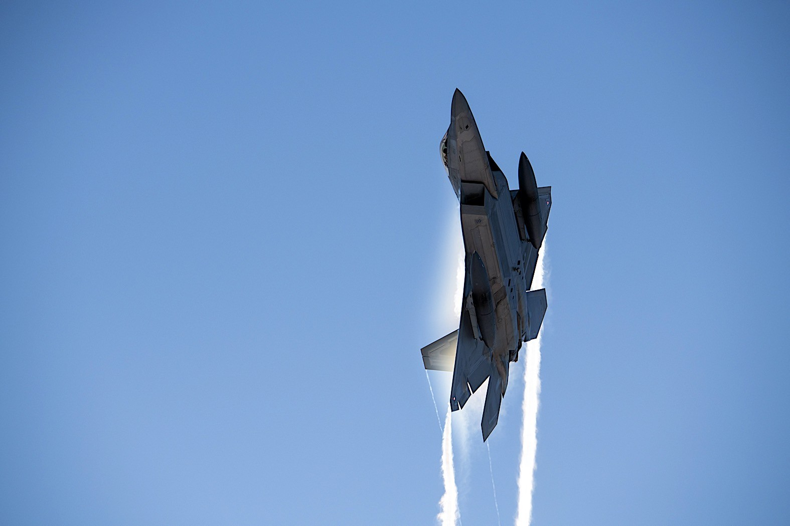

The Amazing World Of Aircraft
Types of Aircraft
Aircraft can be broadly categorized into fixed-wing (airplanes), rotary-wing (helicopters), and lighter-than-air (airships and balloons). Airplane types include commercial airliners (narrow-body, wide-body, and jumbo jets), private jets, cargo planes, and specialized types like amphibious planes and aerobatic planes. Military aircraft are categorized by function as fighters, bombers, and cargo/tanker aircraft.
Aircraft Equipment
Aircraft equipment encompasses a wide range of systems and components vital for flight and operation. These can be broadly categorized into the airframe (fuselage, wings, stabilizers, flight controls, and landing gear), the propulsion system (engines and related equipment), and avionics (electrical, electronic, navigation, and communication systems). Understanding these components is crucial for safe and effective aircraft operation.
Military aircraft equipment encompasses a wide range of components and systems essential for flight operations, combat, and support roles. This includes everything from core flight components like engines and control surfaces to specialized avionics, weapons systems, and safety equipment. Aircraft are categorized into various types, including fighters, bombers, transport, and reconnaissance aircraft, each with unique equipment tailored to its function.
Plane Clicker
Click Plane to kill it
score
Civilian Aircraft
History of Civilian Aviation
Ever since the first military aircraft cursed the battlefield with their frightful presence there were thoughts of what revolutionary changes such machines could do during peace time
The history of civilian aircraft is marked by significant milestones, from early experiments with flight to the widespread use of commercial airliners. The Wright brothers' first successful flight in 1903 laid the foundation for powered, heavier-than-air flight, while the post-World War I era saw the beginnings of commercial aviation. The development of jet airliners in the mid-20th century revolutionized air travel, making long-distance journeys faster and more accessible.
Significant moments in civilian aviation history include the Wright brothers' first sustained flight in 1903, the introduction of the Boeing 747 in 1968, the first wide-body airliner, in 1970, and the development of the Concorde, the first commercial supersonic aircraft, which began passenger service in 1976. Other notable events include the first round-the-world flight without refueling in 1986 and the first flight of the Airbus A380, the largest passenger aircraft to date, in 2005.
Military Aircraft
Military aviation evolved from rudimentary reconnaissance aircraft in the early 20th century to sophisticated, high-speed, and technologically advanced fighters, bombers, and other specialized aircraft. Key developments include the transition from biplanes to monoplanes, the introduction of turbojet engines, and the integration of radar, missiles, and stealth technology.
Significant moments in military aviation history include the Wright Flyer's first successful flight, the World War I advancements in fighter aircraft, the Battle of Britain, the Bell X-1 breaking the sound barrier, and the introduction of stealth technology. These events represent major leaps in aircraft design, combat tactics, and technological capabilities.